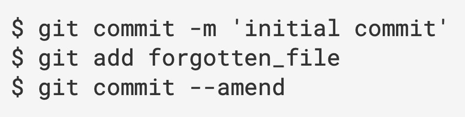

1. 概念
Git 有三种状态，文件可能处于其中之一：
- 已提交(committed) 表示数据已经安全的保存在本地数据库中。
- 已修改(modified) 表示修改了文件，但还没保存到数据库中。
- 已暂存(staged) 。表示对一个已修改文件的当前版本做了标记，使之包含在下次提交的快照中。
2. git配置
2.1. 修改全局的用户名和邮箱
git config --global user.name "xxx"
git config --global user.email "xxx"
针对特定项目可以去掉--global
2.2. 查看用户名和邮箱地址
git config user.name
git config user.email
2.3. 查看所有配置
git config --list
3. git基础
3.1. 查看修改
3.1.1. 查看未暂存的差异（未add）
git diff
3.1.2. 查看已add的差异
git diff --cached
3.2. 撤销
3.2.1. 覆盖上一次提交
git commit --amend
如：

3.3. 提交记录
3.3.1. 查看提交记录
git log
--pretty=oneline/short/full/fuller，使用不同于默认格式的方式
3.3.2. 查看在dev分支中但是不在master中的提交
git log master..dev
3.3.3. 查看具体提交内容
git show ...
3.4. 查看远程服务器名称
git remote
加-v参数可以查看对应的URL
3.4.1. 添加远程仓库
git remote add <shortname> <url>
3.4.2. 从远程仓库拉取数据但不修改文件
git fetch <remote-name>
3.4.3. 推送到远程仓库
git push <remote-name> <branch-name>
4. git分支
4.1. 创建分支
git branch <branch-name>
- 不加参数显示所有分支
- 参数-d删除分支
- 参数-r查看远程分支
- 参数-u跟踪远程分支 git branch -u origin/master
- 参数--set-upstream-to更改跟踪的远程分支
4.2. 切换分支
git checkout <branch-name>
- 切换之前要commit或者stash
4.3. 创建和切换可以合在一起
git checkout -b <branch-name>
- 创建并切换到与远程分支同名的分支 git checkout --track origin/xxx
4.4. 合并分支
git merge dev
- 注：在master分支下运行次命令表示master和dev进行合并
- 使用add来标记已解决冲突
4.5. 推送
git push <remote-name> <branch-name>
- 如：git push origin master，这段命令和 git push origin refs/heads/master:refs/heads/master 以及 git push origin master:master 是一样的，表示把本地的master分支推送到远程仓库的master分支。
- git push origin master ：本地master分支的最新修改推送至远程仓库
- git push -u origin master：第一次推送master分支时，加上了-u参数，把本地的master分支内容推送的远程新的master分支，还会把本地的master分支和远程的master分支关联起来，在以后的推送或者拉取时就可以简化命令。
- 参数--delete表示删除远程分支：
git push <remote-name> --delete <branch-name>
4.6. 创建分支并跟踪远程分支
git checkout -b dev origin/dev
- 与远程跟踪分支合并 git merge origin/dev
- 注：跟踪远程分支后，git pull 命令会自动从跟踪的远程分支上拉取
5. git储藏
5.1. 储藏所有的，包括未跟踪的
git stash --all
6. 其他
6.1. 提交
提交之前先pull一下，一般加--rebase
git pull origin <远程分支名>:<本地分支名>
6.2. 撤销
git reset --soft HEAD^
HEAD^的意思是上一个版本，也可以写成HEAD~1，如果你进行了2次commit，想都撤回，可以使用HEAD~2
--soft
不删除工作空间改动代码，撤销commit，不撤销git add .
6.3. 回到某个提交，之前的提交消失
git reset [id]
6.4. 撤销某个add过的提交，.表示全部
git reset HEAD <file>
git push origin HEAD:refs/for/分支名
git merge --no-ff
7. Git概念
7.1. 提交对象
在进行提交操作时，Git 会保存一个提交对象(commit object)。该提交对象会包含一个指向暂存内容快照的指针。
但不仅仅是这样，该提交对象还包含了作者的姓名和邮箱、提交时输入的信息以及指向它的父对象的指针。
首次提交产生的提交对象没有父对象，普通提交操作产生的提交对象有一个父对象，
而由多个分支合并产生的提交对象有多个父对象。
7.2. 快进fast-forward
由于当前master分支所指向的提交是hotfix的提交的直接上游，所以Git只是简单的将指针向前移动。
换句话说，试图合并两个分支时，如果顺着一个分支走下去能够到达另一个分支，那么Git在合并两者的时候，
只会简单的将指针向前推进(指针右移)，因为这种情况下的合并操作没有需要解决的分歧。